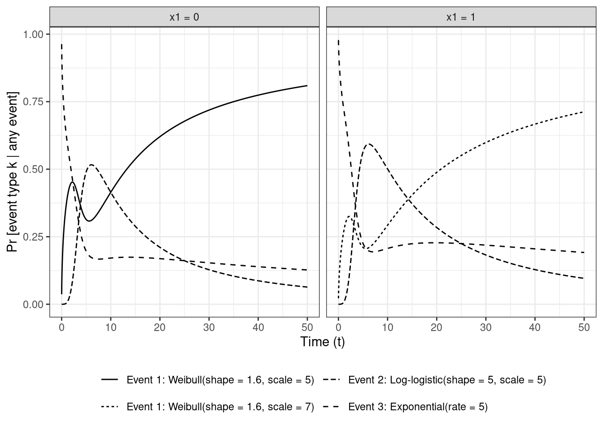
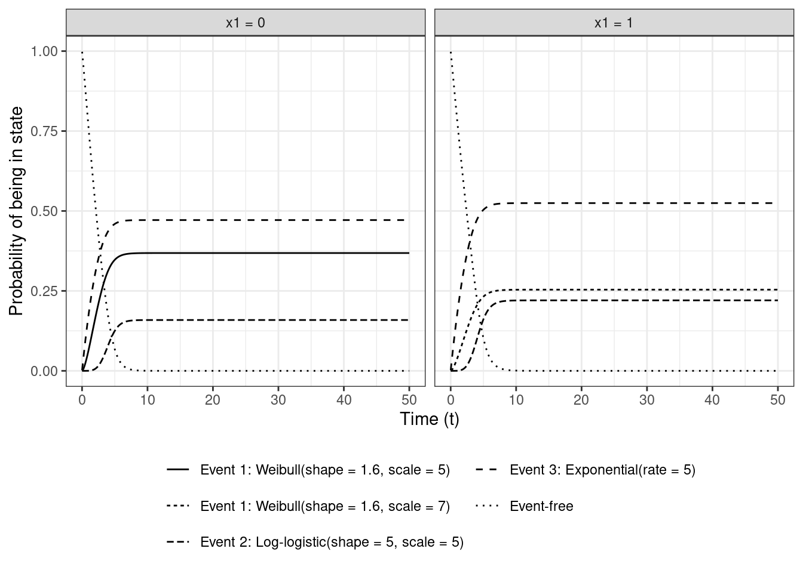
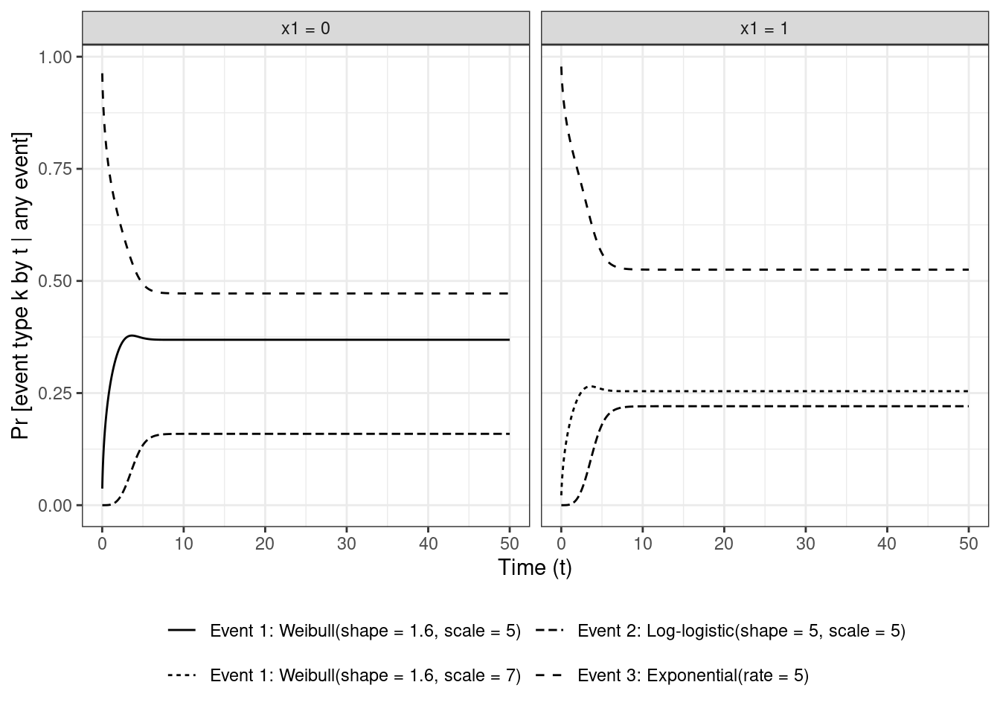
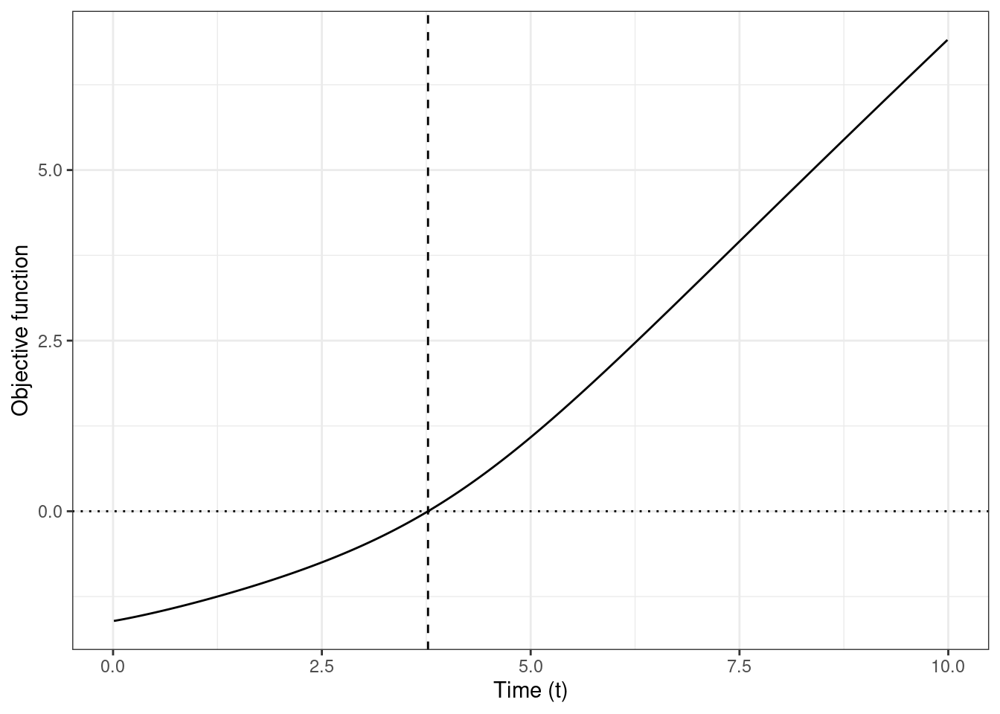
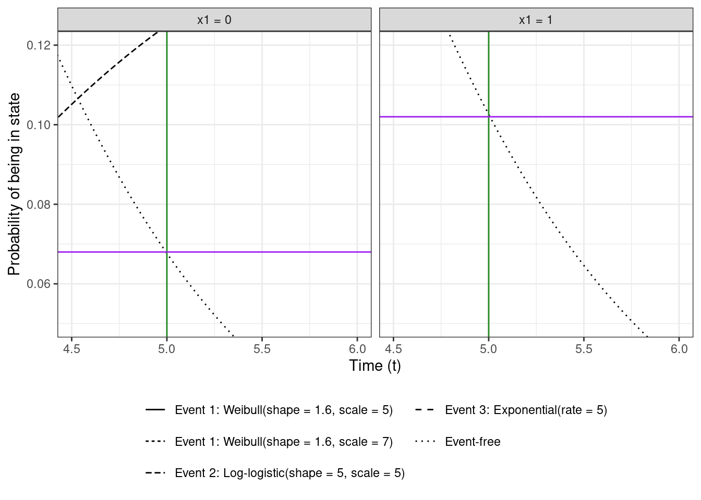
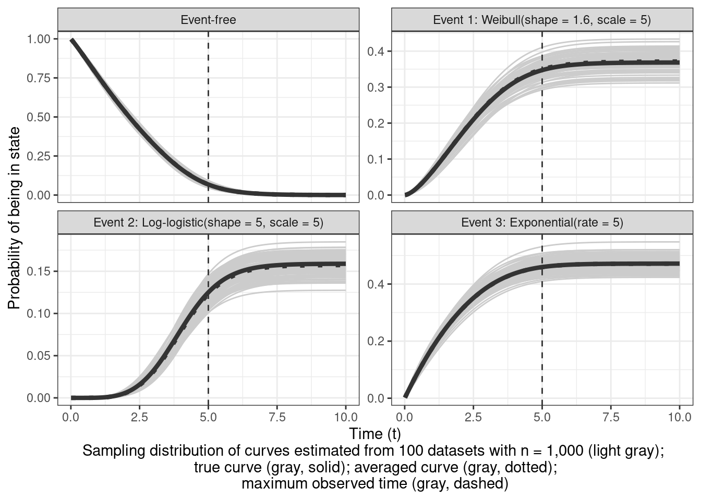
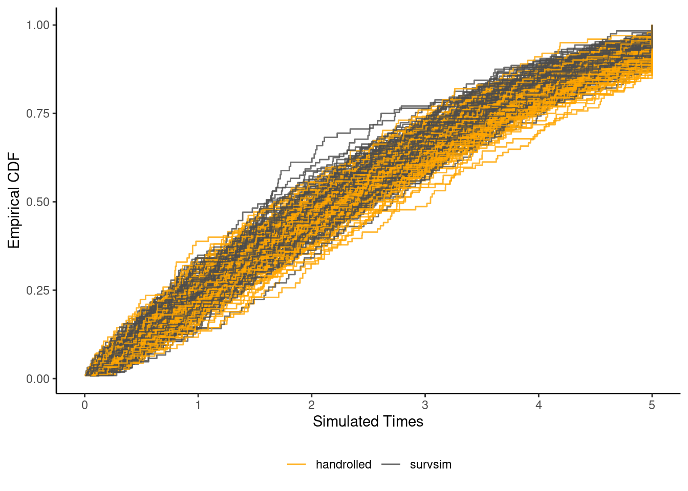

In a previous post, I used the cumulative hazard inversion method to simulate time-to-event (TTE) data from a log-logistic accelerated-failure time (AFT) model with statistical cure. The estimand of interest was the cumulative incidence function (CIF), which is the probability of experiencing the event of interest before time \(t\) (i.e., \(\text{Pr}[T \leq t]\), also known as the cumulative distribution function (CDF) in the absence of censoring).
I came across two things while reading up on material for that post, that I’d mentally filed away for looking into in the future. The first was on simulating TTE data using numerical methods. The second was on estimating the CIF in the competing risk (CR) setting where it wasn’t correct to invert the survivor function (\(S(t) = \text{Pr}[T > t] = 1 - \text{Pr}[T \le t]\)) to get to the CIF.
So this post is on simulating data from the cause-specific hazards (CSH) approach to CR based on this paper (Beyersmann et al. 2009); other key papers I use material from are listed in the references below. To check whether my implementation (and understanding) is correct, I run a mini simulation to see if I can recover the true parameters used for generating the data. I also compare the estimated cause-specific CIFs with the true CIFs.
I initially tried to use the survsim package to simulate CSH CR data, but I found it quite slow. Figuring out what I was doing suboptimally was only clear to me after digging deeply into it and reimplementing the code myself by studying the implementation of survsim::crisk.ncens.sim and the Beyersmann paper. My implementation has the advantage that it
is faster
uses closed-form expressions for the cumulative hazards rather than numerically integrating the hazards
uses the same parameterizations as the flexsurv package I’m using to fit the models so I don’t have to mess around with transforming between parameterizations
can use any distribution that from flexsurv that is not in survsim (so those beyond Weibull, log-normal, log-logistic, and those that are subsumed within these (e.g. exponential within Weibull))
managed to increase my knowledge of this topic
I mean I’d most likely still use survsim, unless I need to simulate a lot of not very small datasets, or want the additional flexibility around simulation-model specification.
I think adjustedCurves::sim_confounded_crisk() can simulate CR data from the CSH approach as well, but I haven’t tried it out.
I’m using the following packages
library(tidyverse)
── Attaching core tidyverse packages ──────────────────────── tidyverse 2.0.0 ──
✔ dplyr 1.1.4 ✔ readr 2.1.5
✔ forcats 1.0.0 ✔ stringr 1.5.1
✔ ggplot2 3.5.2 ✔ tibble 3.2.1
✔ lubridate 1.9.3 ✔ tidyr 1.3.1
✔ purrr 1.1.0
── Conflicts ────────────────────────────────────────── tidyverse_conflicts() ──
✖ dplyr::filter() masks stats::filter()
✖ dplyr::lag() masks stats::lag()
ℹ Use the conflicted package (<http://conflicted.r-lib.org/>) to force all conflicts to become errors
library(survival)library(flexsurv)# functions called via namespace::fun() to avoid conflicts# library(glue) # string interpolation# library(mirai) # for setting daemons() for parallelization# library(survsim)# library(ggh4x) # facet_grid2 function# library(bench) # for benchmarkingtheme_set(theme_bw())
Data generating process
In the usual TTE setting, interest is on a single event. An example from marketing is that of customer churn, where a customer cancels their subscription. The competing risk approach to TTE analysis extends this to cases where more than one event can occur.
Sticking with the churn example, this could be (say) three possible event types (using the event indicator \(D\) with values \(k = 1, 2, 3 (= K)\)) — churn due to customer dissatisfaction with some aspect of the product / service which is the main event of interest that a company would like to reduce (\(D = 1\)), churn due to financial reasons (\(D = 2\)), and churn due to unavoidable reasons (\(D = 3\)). \(D = 0\) indicates not having churned (yet). I’m using an example just to make things a bit more concrete; these hazard functions are unlikely to be representative of any actual churn process.
This single vs multiple TTE analysis is analogous to the distinction between binary (binomial) vs categorical (multinomial) outcomes, with the former taking on values 0 / 1, and the latter taking on more than 2 values e.g., 0 / 1 / 2 / 3.
Distributional parameters
The three churn event types are assumed to have the hazard functions corresponding to these distributions
for the control arm (\(x_1 = 0\)) assuming some experiment is carried out to assess the effectiveness of some action intended to reduce churn. Treatment arm can be coded as \(x_1 = 1\) with treatment assumed to reduce the rate of churn by a time acceleration factor of 1.4 or 40%. So we have
and \(T^2 |x_1\) and \(T^3 | x_1\) are the same for \(x_1 = 0\) and \(x_1 = 1\).
Choosing \(x_1\) to have a non-zero effect only on \(T^1\) means I’m avoiding some of the messiness that comes with interpreting treatment effects on the CIFs.
I’m also assuming a 50-50 (%) split of \(x_1\) into the two groups.
These values for the shape / scale / rate parameters were chosen to have decent balance across the different event types and to not have some categories with very low event counts.
Latent failure time approach
The use of \(T^{\bullet}\) makes it seem like I’m invoking the latent failure time approach to CR, but I’m only using it as a convenient way of indicating the chosen CSH functions. As pretty much all papers on CR warn, the latent variable approach — which retains \(T_i = min(T^1_i, \dots, T^K_i)\) for each individual \(i\) — assumes unverifiable dependence structures between the latent event time variable \(T^k\) which are generally not identifiable from observed data.
This is sad because the latent variable approach seems a lot more intuitive and is very simple to generate data from when the latent event times are assumed to be independent
n <-7set.seed(25)tibble(# generate group membershipx1 =rbinom(n, 1, prob =0.5),# generate counterfactual for x1 = 0t1_0 =rweibull(n, shape =1.6, scale =5),# and counterfactual for x1 = 1 (using scale = 7)t1_1 =rweibull(n, shape =1.6, scale =exp(log(5) +log(1.4))),# use the consistency equation to realize the latent t1t1 = (x1 * t1_1) + ((1- x1) * t1_0),t2 =rllogis(n, shape =5, scale =5),# exponential distribution, same as rexp(n, 1 / 5)t3 =rweibull(n, shape =1, scale =5),# administrative censoringcens_time =4,# take the minimum of the latent event and censoring timestime =pmin(t1, t2, t3, cens_time), # record which event / censor time is the smallestevent =case_when( cens_time < t1 & cens_time < t2 & cens_time < t3 ~0, t1 < t2 & t2 < t3 ~1, t2 < t1 & t2 < t3 ~2, t3 < t1 & t3 < t2 ~3 )) %>%mutate(across(.cols =everything(), .fns =~round(.x, 2)))
I’m quite sure that if I used this for my simulation I’d still end up with unbiased parameter estimates, but the assumption of independence may not be very realistic depending on the application.
A future rabbit hole to go down would be to look into the literature on using copulas for modelling dependence between the latent event times.
The event time for each individual will be referred to using a single random variable \(T\) since no latent variables are assumed.
Cause-specific hazards (CSH)
We can plot the CSH functions defined as
\[
h_k(t | x_1) = \lim_{\Delta t \rightarrow 0} \frac{\text{Pr}[t \le T < t + \Delta t, D = k | T \ge t, x_1]}{\Delta t}
\]
for the \(k^\text{th}\) event showing the instantaneous rate of occurrence of that event
I’m using the hazard functions implemented within flexsurv (e.g., flexsurv::hweibull()). The exponential hazard is constant over time. The log-logistic hazard first rises and then falls with time. The Weibull hazards for the chosen parameters are monotonically increasing functions of time. The hazard for each event is independent of the hazard for all other events.
Relative contribution to the overall hazard
As mentioned in the Hinchliffe and Lambert (2013) paper, it can be useful to look at the relative contribution of the hazard of each event to the overall hazard within each group at each \(t\)
\[
\text{Pr}[D = k | t \le T < t + \Delta t, T \ge t, x_1] = \frac{h_k(t | x_1)}{\sum_{k = 1}^K h_k(t | x_1)}
\]
This can be interpreted as the probability of an event of type \(k\) among those who experience an event at time \(t\) and haven’t experienced any of the events before \(t\).
Code
# prob(cause | event = 1)cause_specific_hazards_by_group <-bind_rows( hazards %>%# for x = 0, drop the cause 1 for x = 1filter(Distribution !="Event 1: Weibull(shape = 1.6, scale = 7)") %>%mutate(Group ="x1 = 0"), hazards %>%# for x = 1, drop the cause 1 for x = 0filter(Distribution !="Event 1: Weibull(shape = 1.6, scale = 5)") %>%mutate(Group ="x1 = 1"))relative_contribution_to_overall_hazard <-cause_specific_hazards_by_group %>%arrange(Group, time, Distribution) %>%group_by(Group, time) %>%mutate(overall_hazard =sum(Hazard), p = Hazard / overall_hazard) %>%ungroup()relative_contribution_to_overall_hazard %>%ggplot(aes(x = time, y = p, group =interaction(Group, Distribution), linetype = Distribution)) +geom_line() +xlab("Time (t)") +ylab("Pr [event type k | any event]") +facet_wrap(~ Group) +theme(legend.title =element_blank(),legend.position ="bottom" ) +guides(linetype =guide_legend(nrow =2))

For individuals that churn very soon after \(t = 0\), they’re more likely to have had \(D = 3\), followed by \(D = 1\), followed by \(D = 2\). Events that occur around \(t = 5\) are most likely to be \(D = 2\) as shown by the long-dash line peaking after that time.
Cause-specific cumulative incidence function (CIF)
A key quantity is the cumulative incidence function (CIF) for each of the \(K = 3\) events, which is the probability that an individual will experience event \(k\) before time \(t\) in the absence of the occurrence of any of the other events
\[
\text{CIF}_k(t|x_1) = \text{Pr}[T \le t, D = k | x_1] = \int_{u=0}^{u=t} h_k(u | x_1) S(u | x_1) du
\]
\(h_k(t|x_1)\) is the CSH function, and \(S(t|x_1)\) is the overall survivor function in each group. The latter is defined as the probability of being free of any event up to time \(t\)
The cumulative hazard functions are used as implemented in flexsurv (e.g., flexsurv::Hweibull()). In discrete-time, the integral for the CIF is replaced by summation, and \(S(u|\cdot)\) in the integrand / summand is replaced with \(S(-u | \cdot)\), which is the survival probability at a time point right before \(u\). The CIFs and \(S(t)\) are probabilities of being in the different states by time \(t\)
Code
# calculate the overall survival from the overall hazardoverall_survival <- time_seq %>%expand_grid(x1 =c(0, 1), time = . ) %>%mutate(surv =exp(-(Hweibull(x = time, shape =1.6, scale =exp(log(5) +log(1.4) * x1), log =FALSE) +Hllogis(x = time, shape =5, scale =5, log =FALSE) +Hweibull(x = time, shape =1, scale =5, log =FALSE) )),Group =paste0("x1 = ", x1) ) %>%select(-x1)time_step <- time_seq[2] - time_seq[1]# calculate CIFscumulative_incidence_curves <- cause_specific_hazards_by_group %>%inner_join(y = overall_survival, by =c("Group", "time")) %>%group_by(Group, Distribution) %>%mutate(CIF =order_by(time, cumsum(Hazard * surv * time_step))) %>%ungroup()# plot the CIFs# P[T <= t, cause = k | Event]cumulative_incidence_curves_plot_data <- cumulative_incidence_curves %>%select(-Hazard) %>%pivot_wider(id_cols =c(time, Group, surv), names_from = Distribution, values_from = CIF) %>%rename(`Event-free`= surv) %>%pivot_longer(cols =-c(time, Group), names_to ="Event", values_to ="CIF") %>%filter(complete.cases(.))cumulative_incidence_curves_plot <- cumulative_incidence_curves_plot_data %>%ggplot(aes(x = time, y = CIF, linetype = Event)) +geom_line() +xlab("Time (t)") +ylab("Probability of being in state") +facet_wrap(~ Group) +theme(legend.title =element_blank(),legend.position ="bottom" ) +guides(linetype =guide_legend(nrow =3))cumulative_incidence_curves_plot

The CIFs are called subdistribution functions because they never reach 1 (at \(t = \infty\)) due to the presence of competing events so are not proper probability distributions. In the single event case, the CIF eventually reaches 1 given enough time.
Within each panel, the curves sum to 1 at every time point, since each individual is in one state at each time point
All individuals start with being event free at \(t = 0\), but as as time progresses, they move into any one of the \(k\) states, so the probability of being event-free, i.e., staying in state \(D = 0\), decreases with time and goes to 0 eventually (here around \(t = 7\)).
One difference between this plot and the unnormalized hazard plot is that here the hazard of each event contributes to the CIF of all other events via it’s dependence on the overall survival. So \(\text{CIF}_2(t | x1 = 0) \neq \text{CIF}_2(t | x1 = 1)\) and \(\text{CIF}_3(t | x1 = 0) \neq \text{CIF}_3(t | x1 = 1)\) because \(H_1(t | x_1 = 0) \ne H_1(t | x_1 = 1)\), even though \(H_2(t | x_1 = 0) = H_2(t | x_1 = 1)\) and \(H_3(t | x_1 = 0) = H_3(t | x_1 = 1)\).
Relative contribution to overall churn
Similar to the relative contribution of the CSHs to overall hazard I came across in the Hinchliffe and Lambert paper, they also mention the rescaled cause-specific CIFs (disregarding \(S(t | x_1)\))
\[
\text{Pr}[D = k | T \le t, x_1] = \frac{\text{CIF}_k(t | x_1)}{\sum_{k = 1}^K \text{CIF}_k(t | x_1)}
\]
which is the probability of having had event \(k\) among those who have churned by time \(t\) within levels of \(x_1\)
Code
# plot the rescaled CIFs conditional on event# so ignores the no even state# P[T <= t, cause = k | Event]cumulative_incidence_curves %>%mutate(rescaled_CIF = CIF /sum(CIF), .by =c(Group, time)) %>%# arrange(Group, time) %>%# print()ggplot(aes(x = time, y = rescaled_CIF, linetype = Distribution)) +geom_line() +xlab("Time (t)") +ylab("Pr [event type k by t | any event]") +facet_wrap(~ Group) +theme(legend.title =element_blank(),legend.position ="bottom" ) +guides(linetype =guide_legend(nrow =2))

Implement the simulation steps
The key idea behind simulating CR data from the CSH approach is summarized in the following steps (here within each level of covariate \(x_1\)):
specify the cause-specific hazards \(h_k(t | x_1)\)
simulate survival time \(T_i\) for the \(i^\text{th}\) individual with the all-cause cumulative hazard \(\sum_{k=1}^K H_k(t | x_1)\)
for a simulated \(T_i\), simulate the event type \(D_i\) from a multinomial distribution with \(k\)-dimensional probability vector from the scaled hazards \(h_k(t | x_1) / \sum_{k = 1}^K h_k(t | x_1)\). This gives the pair \((T_i, D_i)\) for the \(i^\text{th}\) individual
simulate censoring time \(C_i\) and set \(T_i = C_i\) if \(C_i < T_i\) (and set \(D_i = 0\)).
The event time \(T_i\) is generated by inverting the survivor function. The CDF \(F(t)\) has a \(\text{Uniform}[0, 1]\) distribution where \(F(t_i) = u_i \sim U[0, 1]\). We can use \(F(t) = 1 - S(t)\) to equate \(S(t) = 1 - u\) which gives
For a randomly drawn \(u_i \sim U[0,1]\) (and given \(x_{i, 1}\)), numerical root finding methods can be employed to estimate the value of \(t_i\) which satisfies this equation. This process of using \(u_i\) to estimate \(t_i\) is known as inverse transform sampling.
Overall hazard
This function implements the sum of the cumulative hazards \(H_k(t | x_1)\) which is 0 at \(t = 0\) but increases without bound beyond that
This next one calculates the event probabilities (conditional on an event at \(t\)) \(\text{Pr}[D = k | t \le T < t + \Delta t, T \ge t, x_1]\) given \(t\) and \(x_1\)
The function returns a \(K\)-dimensional vector which sums to 1.
Objective function
Implement the objective function
obj_fun <-function(t, u, x1) {log(1- u) +all_cause_cumulative_hazards(t, x1)}obj_fun(t =3.771, u =0.8, x1 =0)
[1] -0.0001226652
tibble(time = time_seq[time_seq <10.0], obj_val =map_dbl(.x = time, .f =~obj_fun(.x, u =0.8, x1 =0) ) ) %>%ggplot(aes(x = time, y = obj_val)) +geom_line() +geom_hline(yintercept =0, linetype ="dotted") +geom_vline(xintercept =3.771, linetype ="dashed") +xlab("Time (t)") +ylab("Objective function")

This plot corresponding to a grid search on \(t \in (0, 10)\) shows that for \(u_i = 0.8\), \(t_i \approx 3.771\) (dashed vertical line) is very close to the root since the objective function evaluates to approximately -0.00012.
Doing grid search is kinda tedious, but we can use stats::uniroot to find the root \(t_i\) for a given \(u_i\) (and \(x_{i, 1}\)) and return the pair \((T_i, D_i)\).
Simulate single outcome
simulate_single_outcome <-function(u, x1, admin_censor_time =5, lower_bound_time =1e-10) {# check whether simulated time would lie outside the time interval we want to solve for# in this case the function would have the same sign at the interval endpoints# if the function has different signs at the endpoints then a root is within the interval same_sign <- (obj_fun(u = u, t =0.00001, x1 = x1) *obj_fun(u = u, t = admin_censor_time, x1 = x1)) >0if (same_sign) { time <- admin_censor_time cause <-0 iter <-NA_real_ fn_value_at_root <-NA_real_ } else {# for a handful of cases (out of 100,000s) we can end up with t = 0 from a distribution that doesn't support it# https://stats.stackexchange.com/questions/176376/invalid-survival-times-for-this-distribution# so we can set a lower bound on time > 0 uniroot_obj <-uniroot(f = obj_fun, interval =c(lower_bound_time, admin_censor_time), # pass arguments to the objective functionu = u, x1 = x1 ) time <- uniroot_obj$root cause <-which.max(rmultinom(1, 1, cause_specific_probabilities(t = time, x1 = x1)) ) iter <- uniroot_obj$iter fn_value_at_root <- uniroot_obj$f.root }tibble(u, x1, admin_censor_time, iter, fn_value_at_root, time, cause)}bind_rows(# non-censoredsimulate_single_outcome(u =0.2, x1 =1, admin_censor_time =5),# censoredsimulate_single_outcome(u =0.95, x1 =1, admin_censor_time =5),# same u but larger admin censored time means not censoredsimulate_single_outcome(u =0.95, x1 =1, admin_censor_time =12))
# A tibble: 3 × 7
u x1 admin_censor_time iter fn_value_at_root time cause
<dbl> <dbl> <dbl> <dbl> <dbl> <dbl> <dbl>
1 0.2 1 5 6 -0.00000118 0.920 3
2 0.95 1 5 NA NA 5 0
3 0.95 1 12 7 -0.000000103 5.76 2
A lower bound of \(t\) close to 0 is applied to avoid ending up with estimates of exactly 0, which can cause problems with estimation for some parametric distributions. If the drawn \(u_i\) is large enough that the objective function has the same sign at both endpoints of the interval, then we skip the root finding as that observation would be treated as censored anyway.
Administrative censoring at \(t = 5\) is assumed, which should lead to about 7% censored individuals in \(x_1 = 0\) and 10% in \(x_1 = 1\) (and about 8-9% overall) as seen in this zoomed-in version of the CIF plot (from a few sections above)
Code
cumulative_incidence_curves_plot +geom_vline(xintercept =5.0, color ="forestgreen") +geom_hline(data =tibble(Group =c("x1 = 0", "x1 = 1"), y =c(0.068, 0.102)),aes(yintercept = y), color ="purple" ) +coord_cartesian(xlim =c(4.5, 6), ylim =c(0.05, 0.12))

Simulate single dataset
Finally, the next function stitches together the steps for simulating a full dataset with \(n = 1,000\) individuals and their group indicator \(x_{i, 1} \in \{0, 1\}\), event time \(T_i\), and event indicator \(D_i \in \{0, 1, 2, 3\}\).
# A tibble: 5 × 7
u x1 admin_censor_time iter fn_value_at_root time cause
<dbl> <int> <dbl> <dbl> <dbl> <dbl> <dbl>
1 0.166 1 5 6 -0.00000122 0.765 3
2 0.325 1 5 5 -0.000000279 1.52 1
3 0.509 1 5 6 -0.00000489 2.47 3
4 0.728 1 5 6 -0.000000505 3.70 2
5 0.990 0 5 NA NA 5 0
Test the implementation
Parameter estimates
To check that the simulation function works, a bunch of functions are defined in the next code chunk that take a single simulated dataset, convert it into cause-specific datasets (for each event type \(k\), update the event indicator by censoring competing events), fit a (correctly specified) parametric model separately to each cause-specific dataset, extract the coefficients from each model, and return them as a data frame.
create_cause_specific_datasets <-function(data) {map(.x =1:3,.f =~ { data %>%select(x1, time, cause) %>%mutate(event =as.numeric(cause == .x)) } )}fit_cause_specific_models <-function(cause_specific_datasets, distributions =c("weibull", "llogis", "weibull")) {map2(.x = cause_specific_datasets,.y = distributions,.f =~flexsurvreg(Surv(time = time, event = event) ~ x1, data = .x, dist = .y) )}extract_coefs <-function(list_models) {map2_dfr(.x = list_models, .y =1:length(list_models), .f =~ { .x %>%# calls flexsurv:::tidy.flexsurvreg() flexsurv::tidy() %>%select(term, estimate, se = std.error) %>%mutate(cause = .y, .before = term) })}run_pipeline <-function(seed) { seed %>%simulate_single_dataset(seed = .) %>%create_cause_specific_datasets() %>%fit_cause_specific_models() %>%extract_coefs() %>%mutate(rep = seed, .before = cause)}# wrap it up into purrr::safely() since it fails # for some seeds (e.g. 125)safely_run_pipeline <-safely(run_pipeline)safely_run_pipeline(seed =3)
The safely_run_pipeline() function returns the point estimates and standard errors for the shape, scale, and coefficient for \(x_1\) from each cause-specific model.
This process is repeated 5,000 times. A single run takes about 1.6 seconds on my machine, so to save time, the runs are parallelized. Using the recently added purrr::in_parallel function cuts down the total execution time from a little over 2 hours to about 20 minutes (it still took 3x longer than I expected, so I’d like to look into that later — overhead is expected from parallelization but not 3x. Maybe it would have been better to use fewer cores.).
Using the version of purrr at the time of writing, in_parallel requires that all these functions defined above are nested into one big function which can then be shipped off to the executors. All the package functions should be explicitly namespaced via package::fun() as well. The full script for running this pipeline is here.
Saved results can be read back in. About 44 or 0.9% of the simulations (with the following seeds) failed at some step.
For the seeds that ran without error, the estimates can be plotted with the true parameter values overlaid for comparison. No transformation is needed when using flexsurv:::tidy.flexsurvreg() (except for the \(x_1\) coefficient which is reported on the log scale)
It’s reassuring but not surprising, given the ubiquity of this approach to CSH CR analysis, to see the density estimates centered at the true values indicating unbiasedness of the CSH approach.
CIF estimates
Since the parameters are estimated correctly, any downstream quantities like the cause-specific CIFs and overall survival should be unbiased too. In the next figure, I’m visualizing these for the four states within \(x_1 = 0\). The true curves and the average of 100 curves from randomly simulated datasets (restricted to \(t \in (0, 10]\)) are pretty close
Code
sampling_distribution_CIFs <-read_rds("saved_objects/sampling_distribution_CIFs.rds")sampling_distribution_CIFs_mean <- sampling_distribution_CIFs %>%summarise(CIF =mean(CIF), .by =c(Event, time))sampling_distribution_CIFs %>%ggplot(aes(x = time, y = CIF, group = rep)) +geom_line(color ="gray80") +geom_line(data = cumulative_incidence_curves_plot_data %>%filter(Group =="x1 = 0", time <=10.0) %>%mutate(Event =fct_relevel(factor(Event), "Event-free", after =0)),aes(x = time, y = CIF),color ="gray20", linewidth =1.5,inherit.aes =FALSE ) +geom_line(data = sampling_distribution_CIFs_mean,aes(x = time, y = CIF),color ="gray20", linewidth =1.5, linetype ="dotted",inherit.aes =FALSE ) +geom_vline(xintercept =5, linetype ="dashed", color ="gray20") +xlab(glue::glue("Time (t)\nSampling distribution of curves ", "estimated from 100 datasets with ", "n = 1,000 (light gray); \ntrue curve ", "(gray, solid); averaged curve (gray, dotted);","\nmaximum observed time (gray, dashed)")) +ylab("Probability of being in state") +facet_wrap(~ Event, scales ="free_y")

Intuitively, the variability (or lack of) boils down to the number of events of each type \(k\). Events that are more likely to occur first (in this case \(k=3\)) will have more events and more precise estimates. The estimate for \(S(t|x_1 = 0)\) is the most precise here (all the gray lines are very close to the black line) because it uses information on all the events.
Each individual curve is produced using this function
and the next code runs the pipeline for producing these 100 CIF estimates
Code
time_seq_subset <- time_seq %>%keep(.p =~ .x <=10.0)sampling_distribution_CIFs <-1:100%>%map(.f =~ {print(glue::glue("rep: {.x}"))safely_estimate_CIF(seed = .x, time_seq = time_seq_subset, covariate_level =data.frame(x1 =0) ) } ) %>%# remove the seeds where the estimation failedimap(.f =~ { res <-pluck(.x, "result")if (!is.null(res)) { res %>%mutate(rep = .y, .before = time) } else { res } } ) %>%compact() %>%list_rbind() %>%mutate(Event =case_when( Distribution =="V1"~"Event-free", Distribution =="V2"~"Weibull(shape = 1.6, scale = 5)", Distribution =="V3"~"Log-logistic(shape = 5, scale = 5)", Distribution =="V4"~"Exponential(rate = 5)" ) )# write_rds(sampling_distribution_CIFs, "saved_objects/sampling_distribution_CIFs.rds")
Comparison with survsim::crisk.ncens.sim
I initially started on this project by attempting to use the function from survsim, but I was getting very different results from fitting the models using flexsurv. It was also taking quite long (~6x longer) to produce simulated datasets mostly because of me picking simulation parameters without giving it much thought1. Thinking through the process in detail is what led to this post being much longer than anticipated. This section compares the parameterizations for the hazard functions and simulated draws from survsim and flexsurv.
1 I picked a large value for administrative censoring, which meant that uniroot would take much longer to run due to increased number of iterations to converge to the root, and increased time due to multiple integrate() calls.
Converting flexsurv parameterization to survsim
The hazard function code for Weibull and log-logistic is taken from survsim:::crisk.ncens.sim()here
It’s a bit confusing since the user function survsim::crisk.sim() takes anc.ev and beta0.ev as inputs, but these get transformed to a.ev and b.ev and then to par1 and par2 (ok that last transformation is straightforward).
with beta0.ev = par1 = \(p_1\) and anc.ev = par2 = \(p_2\). This gives the corresponding transformations for Weibull in simsurv, anc.ev = \(1 / a\) (so inverse of flexsurv shape), and beta0.ev = \(\text{log}(\mu)\) (so log of flexsurv scale).
Log-logistic implemented in flexsurv
# log-logistic hazardflexsurv::hllogis
function(x, shape=1, scale=1, log = FALSE)
{
h <- dbase("llogis", log=log, x=x, shape=shape, scale=scale)
for (i in seq_along(h)) assign(names(h)[i], h[[i]])
if (log) ret[ind] <- log(shape) - log(scale) + (shape-1)*(log(x) - log(scale)) - log(1 + (x/scale)^shape)
else ret[ind] <- (shape/scale) * (x/scale)^{shape-1} / (1 + (x/scale)^shape)
ret
}
<bytecode: 0x62fd99288f80>
<environment: namespace:flexsurv>
if shape is \(a\) and scale is \(b\), the hazard function is
\[
h_{\text{ll}}^{\text{flexsurv}}(t; a, b) = \frac{(a / b) (t / b)^{a - 1}}{1 + (t / b)^a}
\]
compared with the one from simsurv (with par1 = \(p_1\) and par2 = \(p_2\))
\(p_2 = \text{anc.ev} = a\) (shape from flexsurv) and \(p_1 = 1 / \text{exp}(\text{beta0.ev}) = a \text{log}(b)\) (shape times log(scale) from flexsurv).
survsim function
survsim_sim_fn <-function(n =1000) { survsim::crisk.sim(n = n,foltime =5,# TTE distrnsit =3,dist.ev =c("weibull", "llogistic", "weibull"),# anc.ev is 1 / shape, exp(beta0) is scale in flexsurv weibull AFT# anc.ev is shape, beta0.ev is shape * log(scale) in flexsurv llogisanc.ev =c(1/1.6, 5, 1),beta0.ev =c(log(5), 5*log(5), log(5)),# covariate processx =list(c("bern", 0.5)),beta =list(c(1.4), c(0), c(0)),# censoring process, assume constant here to only apply administrative censoringdist.cens ="unif", beta0.cens =500, anc.cens =500 ) %>%as_tibble()}survsim_sim_fn(n =10)
# A tibble: 10 × 8
nid cause time status start stop z x
<int> <dbl> <dbl> <dbl> <lgl> <lgl> <dbl> <dbl>
1 1 NA 5 0 NA NA 1 0
2 2 1 3.79 1 NA NA 1 0
3 3 3 0.321 1 NA NA 1 0
4 4 3 1.02 1 NA NA 1 1
5 5 1 2.38 1 NA NA 1 1
6 6 3 2.45 1 NA NA 1 1
7 7 3 0.0557 1 NA NA 1 0
8 8 3 0.0681 1 NA NA 1 0
9 9 3 0.0741 1 NA NA 1 1
10 10 1 2.34 1 NA NA 1 0
The \(z\) column is for individual frailties.
Compare run times
The next figure shows a dot plot of the execution time distribution by repeating the process 10 times for both functions (again previously run results read back in)
shows about 2x speedup; I’m assuming most of this comes from not having to use numerical integration but using the cumulative hazards programmed within flexsurv.
Compare samples
The next plot shows the empirical distribution functions for 100 samples of size 100 from the two implementations
Code
# eCDFs for a large draw overlaid to compare the draws - they should be overlapping# set.seed(23)# survsim_sample <- survsim_sim_fn(n = 10000)# set.seed(23)# handrolled_sample <- simulate_single_dataset(n_rows = 10000, seed = NULL)## write_rds(survsim_sample, file = "saved_objects/survsim_sample.rds")# write_rds(handrolled_sample, file = "saved_objects/handrolled_sample.rds")survsim_sample <-read_rds("saved_objects/survsim_sample.rds")handrolled_sample <-read_rds("saved_objects/handrolled_sample.rds")bind_rows( survsim_sample %>%select(time) %>%mutate(group ="survsim"), handrolled_sample %>%select(time) %>%mutate(group ="handrolled")) %>%mutate(rep =sample(1:100, size =20000, replace =TRUE)) %>%ggplot(aes(x = time, group =interaction(group, rep), color = group)) +stat_ecdf(pad =FALSE, alpha =0.8) +xlab("Simulated Times") +ylab("Empirical CDF") +theme_classic() +theme(legend.position ="bottom", legend.title =element_blank()) +scale_color_manual(values =c("orange", "gray30"))

It seems that the gray curves (survsim) are a bit higher than the ones in orange (my implementation). I haven’t looked into why, but it seems likely to be due to sampling variation.
References
The main refs for the material in this post
Beyersmann, J., Latouche, A., Buchholz, A., & Schumacher, M. (2009). Simulating competing risks data in survival analysis. Statistics in medicine, 28(6), 956-971.
Allignol, A., Schumacher, M., Wanner, C. et al. Understanding competing risks: a simulation point of view. BMC Med Res Methodol11, 86 (2011). https://doi.org/10.1186/1471-2288-11-86 - what I found cool is that this paper uses the non-parametric estimate of the baseline hazard function to simulate proportional hazard data from the cox model
Crowther, M. J., & Lambert, P. C. (2012). Simulating Complex Survival Data. The Stata Journal, 12(4), 674-687. https://doi.org/10.1177/1536867X1201200407 (Original work published 2012)
Putter, H., Fiocco, M. and Geskus, R.B. (2007), Tutorial in biostatistics: competing risks and multi-state models. Statist. Med., 26: 2389-2430. https://doi.org/10.1002/sim.2712 - key paper on competing risk analyses
Hinchliffe, S.R., Lambert, P.C. Flexible parametric modelling of cause-specific hazards to estimate cumulative incidence functions. BMC Med Res Methodol13, 13 (2013). https://doi.org/10.1186/1471-2288-13-13
flexsurv package vignette on multi-state modelling
survival package vignette reproducing Putter et al analysis
Andersen PK, Geskus RB, de Witte T, Putter H. Competing risks in epidemiology: possibilities and pitfalls. Int J Epidemiol. 2012 Jun;41(3):861-70. doi: 10.1093/ije/dyr213. Epub 2012 Jan 9. PMID: 22253319; PMCID: PMC3396320.
Austin PC, Lee DS, Fine JP. Introduction to the Analysis of Survival Data in the Presence of Competing Risks. Circulation. 2016 Feb 9;133(6):601-9. doi: 10.1161/CIRCULATIONAHA.115.017719. PMID: 26858290; PMCID: PMC4741409.
Fine, J. P., & Gray, R. J. (1999). A Proportional Hazards Model for the Subdistribution of a Competing Risk. Journal of the American Statistical Association, 94(446), 496–509. https://doi.org/10.2307/2670170
Latouche A, Allignol A, Beyersmann J, Labopin M, Fine JP. A competing risks analysis should report results on all cause-specific hazards and cumulative incidence functions. J Clin Epidemiol. 2013 Jun;66(6):648-53. doi: 10.1016/j.jclinepi.2012.09.017. Epub 2013 Feb 14. PMID: 23415868.
Scheike, T. H., & Zhang, M.-J. (2011). Analyzing Competing Risk Data Using the R timereg Package. Journal of Statistical Software, 38(2), 1–15. https://doi.org/10.18637/jss.v038.i02
Thomas H. Scheike, Mei-Jie Zhang, Thomas A. Gerds, Predicting cumulative incidence probability by direct binomial regression, Biometrika, Volume 95, Issue 1, March 2008, Pages 205–220, https://doi.org/10.1093/biomet/asm096
Edouard F Bonneville, Liesbeth C de Wreede, Hein Putter, Why you should avoid using multiple Fine–Gray models: insights from (attempts at) simulating proportional subdistribution hazards data, Journal of the Royal Statistical Society Series A: Statistics in Society, Volume 187, Issue 3, August 2024, Pages 580–593, https://doi.org/10.1093/jrsssa/qnae056
Source Code
---title: "Simulating data from the cause-specific hazard approach to competing risks"date: "2025-08-09"categories: [R, Simulation, Time-to-event]image: "cif_plot.png"code-fold: trueeditor: visual---In a [previous post](../simulating-survival-data-with-non-PH-and-cure/index.qmd), I used the *cumulative hazard inversion method* to simulate *time-to-event (TTE)* data from a log-logistic accelerated-failure time (AFT) model with statistical cure. The estimand of interest was the *cumulative incidence function (CIF)*, which is the probability of experiencing the event of interest before time $t$ (i.e., $\text{Pr}[T \leq t]$, also known as the cumulative distribution function (CDF) in the absence of censoring).I came across two things while reading up on material for that post, that I'd mentally filed away for looking into in the future. The first was on simulating TTE data using numerical methods. The second was on estimating the CIF in the *competing risk (CR)* setting where it wasn't correct to invert the survivor function ($S(t) = \text{Pr}[T > t] = 1 - \text{Pr}[T \le t]$) to get to the CIF.So this post is on simulating data from the *cause-specific hazards (CSH)* approach to CR based on [this paper](https://onlinelibrary.wiley.com/doi/abs/10.1002/sim.3516) (Beyersmann et al. 2009); other key papers I use material from are listed in the references below. To check whether my implementation (and understanding) is correct, I run a mini simulation to see if I can recover the true parameters used for generating the data. I also compare the estimated cause-specific CIFs with the true CIFs.I initially tried to use the `survsim` package to simulate CSH CR data, but I found it quite slow. Figuring out what I was doing suboptimally was only clear to me after digging deeply into it and reimplementing the code myself by studying the [implementation](https://github.com/cran/survsim/blob/6e1bf878cf3e35b37d6cb7d1ef4b0179ed99b1d3/R/crisk.ncens.sim.R) of `survsim::crisk.ncens.sim` and the Beyersmann paper. My implementation has the advantage that it- is faster- uses closed-form expressions for the cumulative hazards rather than numerically integrating the hazards- uses the same parameterizations as the `flexsurv` package I'm using to fit the models so I don't have to mess around with transforming between parameterizations- can use any distribution that from `flexsurv` that is not in `survsim` (so those beyond Weibull, log-normal, log-logistic, and those that are subsumed within these (e.g. exponential within Weibull))- managed to increase my knowledge of this topicI mean I'd most likely still use `survsim`, unless I need to simulate a lot of not very small datasets, or want the additional flexibility around simulation-model specification.I think `adjustedCurves::sim_confounded_crisk()` can simulate CR data from the CSH approach as well, but I haven't tried it out.I'm using the following packages```{r}#| code-fold: falselibrary(tidyverse)library(survival)library(flexsurv)# functions called via namespace::fun() to avoid conflicts# library(glue) # string interpolation# library(mirai) # for setting daemons() for parallelization# library(survsim)# library(ggh4x) # facet_grid2 function# library(bench) # for benchmarkingtheme_set(theme_bw())```## Data generating processIn the usual TTE setting, interest is on a single event. An example from marketing is that of customer churn, where a customer cancels their subscription. The competing risk approach to TTE analysis extends this to cases where more than one event can occur.Sticking with the churn example, this could be (say) three possible event types (using the event indicator $D$ with values $k = 1, 2, 3 (= K)$) — churn due to customer dissatisfaction with some aspect of the product / service which is the main event of interest that a company would like to reduce ($D = 1$), churn due to financial reasons ($D = 2$), and churn due to unavoidable reasons ($D = 3$). $D = 0$ indicates not having churned (yet). I'm using an example just to make things a bit more concrete; these hazard functions are unlikely to be representative of any actual churn process.This single vs multiple TTE analysis is analogous to the distinction between binary (binomial) vs categorical (multinomial) outcomes, with the former taking on values 0 / 1, and the latter taking on more than 2 values e.g., 0 / 1 / 2 / 3.### Distributional parametersThe three churn event types are assumed to have the hazard functions corresponding to these distributions$$\begin{align*}T^1 | x_1 = 0 &\sim \text{Weibull}(\text{shape} = 1.6, \text{scale} = 5) \\T^2 | x_1 = 0 &\sim \text{Log-logistic}(\text{shape} = 5, \text{scale} = 5) \\T^3 | x_1 = 0 &\sim \text{Exponential}(\text{rate} = 5)\end{align*}$$for the control arm ($x_1 = 0$) assuming some experiment is carried out to assess the effectiveness of some action intended to reduce churn. Treatment arm can be coded as $x_1 = 1$ with treatment assumed to reduce the rate of churn by a time acceleration factor of 1.4 or 40%. So we have$$\begin{align*}T^1 | x_1 = 0 &\sim \text{Weibull}(\text{shape} = 1.6, \text{scale} = 5) \\T^1 | x_1 = 1 &\sim \text{Weibull}(\text{shape} = 1.6, \text{scale} = 7) \end{align*}$$and $T^2 |x_1$ and $T^3 | x_1$ are the same for $x_1 = 0$ and $x_1 = 1$.Choosing $x_1$ to have a non-zero effect only on $T^1$ means I'm avoiding some of the messiness that comes with interpreting treatment effects on the CIFs.I'm also assuming a 50-50 (%) split of $x_1$ into the two groups.These values for the shape / scale / rate parameters were chosen to have decent balance across the different event types and to not have some categories with very low event counts.### Latent failure time approachThe use of $T^{\bullet}$ makes it seem like I'm invoking the *latent failure time approach to CR*, but I'm only using it as a convenient way of indicating the chosen CSH functions. As pretty much all papers on CR warn, the latent variable approach — which retains $T_i = min(T^1_i, \dots, T^K_i)$ for each individual $i$ — assumes unverifiable dependence structures between the latent event time variable $T^k$ which are generally not identifiable from observed data.This is sad because the latent variable approach seems a lot more intuitive and is very simple to generate data from when the latent event times are assumed to be independent```{r}#| code-fold: falsen <-7set.seed(25)tibble(# generate group membershipx1 =rbinom(n, 1, prob =0.5),# generate counterfactual for x1 = 0t1_0 =rweibull(n, shape =1.6, scale =5),# and counterfactual for x1 = 1 (using scale = 7)t1_1 =rweibull(n, shape =1.6, scale =exp(log(5) +log(1.4))),# use the consistency equation to realize the latent t1t1 = (x1 * t1_1) + ((1- x1) * t1_0),t2 =rllogis(n, shape =5, scale =5),# exponential distribution, same as rexp(n, 1 / 5)t3 =rweibull(n, shape =1, scale =5),# administrative censoringcens_time =4,# take the minimum of the latent event and censoring timestime =pmin(t1, t2, t3, cens_time), # record which event / censor time is the smallestevent =case_when( cens_time < t1 & cens_time < t2 & cens_time < t3 ~0, t1 < t2 & t2 < t3 ~1, t2 < t1 & t2 < t3 ~2, t3 < t1 & t3 < t2 ~3 )) %>%mutate(across(.cols =everything(), .fns =~round(.x, 2)))```I'm quite sure that if I used this for my simulation I'd still end up with unbiased parameter estimates, but the assumption of independence may not be very realistic depending on the application.A future rabbit hole to go down would be to look into the literature on using copulas for modelling dependence between the latent event times.The event time for each individual will be referred to using a single random variable $T$ since no latent variables are assumed.### Cause-specific hazards (CSH)We can plot the CSH functions defined as$$h_k(t | x_1) = \lim_{\Delta t \rightarrow 0} \frac{\text{Pr}[t \le T < t + \Delta t, D = k | T \ge t, x_1]}{\Delta t}$$for the $k^\text{th}$ event showing the instantaneous rate of occurrence of that event```{r}time_seq <-seq(0.01, 50, 0.01)hazards <-bind_rows(tibble(Distribution ="Event 1: Weibull(shape = 1.6, scale = 5)",time = time_seq,Hazard =hweibull(time_seq, shape =1.6, scale =5) ),tibble(Distribution ="Event 1: Weibull(shape = 1.6, scale = 7)",time = time_seq,Hazard =hweibull(time_seq, shape =1.6, scale =7) ),tibble(Distribution ="Event 2: Log-logistic(shape = 5, scale = 5)",time = time_seq,Hazard =hllogis(time_seq, shape =5, scale =5) ),tibble(Distribution ="Event 3: Exponential(rate = 5)",time = time_seq,Hazard =hweibull(time_seq, shape =1, scale =5) ))hazards %>%ggplot(aes(x = time, y = Hazard, group = Distribution, linetype = Distribution)) +geom_line() +xlab("Time (t)") +theme(legend.title =element_blank(),legend.position ="bottom" ) +guides(linetype =guide_legend(nrow =2))```I'm using the hazard functions implemented within `flexsurv` (e.g., `flexsurv::hweibull()`). The exponential hazard is constant over time. The log-logistic hazard first rises and then falls with time. The Weibull hazards for the chosen parameters are monotonically increasing functions of time. The hazard for each event is independent of the hazard for all other events.### Relative contribution to the overall hazardAs mentioned in the Hinchliffe and Lambert (2013) paper, it can be useful to look at the relative contribution of the hazard of each event to the overall hazard within each group at each $t$$$\text{Pr}[D = k | t \le T < t + \Delta t, T \ge t, x_1] = \frac{h_k(t | x_1)}{\sum_{k = 1}^K h_k(t | x_1)}$$This can be interpreted as the probability of an event of type $k$ among those who experience an event **at** time $t$ and haven't experienced any of the events before $t$.```{r}# prob(cause | event = 1)cause_specific_hazards_by_group <-bind_rows( hazards %>%# for x = 0, drop the cause 1 for x = 1filter(Distribution !="Event 1: Weibull(shape = 1.6, scale = 7)") %>%mutate(Group ="x1 = 0"), hazards %>%# for x = 1, drop the cause 1 for x = 0filter(Distribution !="Event 1: Weibull(shape = 1.6, scale = 5)") %>%mutate(Group ="x1 = 1"))relative_contribution_to_overall_hazard <-cause_specific_hazards_by_group %>%arrange(Group, time, Distribution) %>%group_by(Group, time) %>%mutate(overall_hazard =sum(Hazard), p = Hazard / overall_hazard) %>%ungroup()relative_contribution_to_overall_hazard %>%ggplot(aes(x = time, y = p, group =interaction(Group, Distribution), linetype = Distribution)) +geom_line() +xlab("Time (t)") +ylab("Pr [event type k | any event]") +facet_wrap(~ Group) +theme(legend.title =element_blank(),legend.position ="bottom" ) +guides(linetype =guide_legend(nrow =2))```For individuals that churn very soon after $t = 0$, they're more likely to have had $D = 3$, followed by $D = 1$, followed by $D = 2$. Events that occur around $t = 5$ are most likely to be $D = 2$ as shown by the long-dash line peaking after that time.### Cause-specific cumulative incidence function (CIF)A key quantity is the cumulative incidence function (CIF) for each of the $K = 3$ events, which is the probability that an individual will experience event $k$ before time $t$ in the absence of the occurrence of any of the other events$$\text{CIF}_k(t|x_1) = \text{Pr}[T \le t, D = k | x_1] = \int_{u=0}^{u=t} h_k(u | x_1) S(u | x_1) du$$$h_k(t|x_1)$ is the CSH function, and $S(t|x_1)$ is the overall survivor function in each group. The latter is defined as the probability of being free of any event up to time $t$$$S(t | x_1) = \text{Pr}[T > t | x_1] = \text{exp}\Bigg(- \sum_{k = 1}^K H_k(t | x_1)\Bigg)$$$H_k(t | x_1)$ is the cumulative hazard function for the $k^{\text{th}}$ event in each group$$H_k(t | x_1) = \int_{u = 0}^{u = t} h_k(u | x_1) du $$The cumulative hazard functions are used as implemented in `flexsurv` (e.g., `flexsurv::Hweibull()`). In discrete-time, the integral for the CIF is replaced by summation, and $S(u|\cdot)$ in the integrand / summand is replaced with $S(-u | \cdot)$, which is the survival probability at a time point right before $u$. The CIFs and $S(t)$ are probabilities of being in the different states by time $t$```{r}# calculate the overall survival from the overall hazardoverall_survival <- time_seq %>%expand_grid(x1 =c(0, 1), time = . ) %>%mutate(surv =exp(-(Hweibull(x = time, shape =1.6, scale =exp(log(5) +log(1.4) * x1), log =FALSE) +Hllogis(x = time, shape =5, scale =5, log =FALSE) +Hweibull(x = time, shape =1, scale =5, log =FALSE) )),Group =paste0("x1 = ", x1) ) %>%select(-x1)time_step <- time_seq[2] - time_seq[1]# calculate CIFscumulative_incidence_curves <- cause_specific_hazards_by_group %>%inner_join(y = overall_survival, by =c("Group", "time")) %>%group_by(Group, Distribution) %>%mutate(CIF =order_by(time, cumsum(Hazard * surv * time_step))) %>%ungroup()# plot the CIFs# P[T <= t, cause = k | Event]cumulative_incidence_curves_plot_data <- cumulative_incidence_curves %>%select(-Hazard) %>%pivot_wider(id_cols =c(time, Group, surv), names_from = Distribution, values_from = CIF) %>%rename(`Event-free`= surv) %>%pivot_longer(cols =-c(time, Group), names_to ="Event", values_to ="CIF") %>%filter(complete.cases(.))cumulative_incidence_curves_plot <- cumulative_incidence_curves_plot_data %>%ggplot(aes(x = time, y = CIF, linetype = Event)) +geom_line() +xlab("Time (t)") +ylab("Probability of being in state") +facet_wrap(~ Group) +theme(legend.title =element_blank(),legend.position ="bottom" ) +guides(linetype =guide_legend(nrow =3))cumulative_incidence_curves_plot```The CIFs are called *subdistribution* functions because they never reach 1 (at $t = \infty$) due to the presence of competing events so are not proper probability distributions. In the single event case, the CIF eventually reaches 1 given enough time.Within each panel, the curves sum to 1 at every time point, since each individual is in one state at each time point$$\sum_{k = 1}^K\text{CIF}_k(t | x_1) + S(t | x_1) = 1 = \text{Pr}[T \le t, D = 1 | x_1] + \text{Pr}[T \le t, D = 2 | x_1] + \text{Pr}[T \le t, D = 3 | x_1] + \text{Pr}[T > t | x_1]$$All individuals start with being event free at $t = 0$, but as as time progresses, they move into any one of the $k$ states, so the probability of being event-free, i.e., staying in state $D = 0$, decreases with time and goes to 0 eventually (here around $t = 7$).One difference between this plot and the unnormalized hazard plot is that here the hazard of each event contributes to the CIF of all other events via it's dependence on the overall survival. So $\text{CIF}_2(t | x1 = 0) \neq \text{CIF}_2(t | x1 = 1)$ and $\text{CIF}_3(t | x1 = 0) \neq \text{CIF}_3(t | x1 = 1)$ because $H_1(t | x_1 = 0) \ne H_1(t | x_1 = 1)$, even though $H_2(t | x_1 = 0) = H_2(t | x_1 = 1)$ and $H_3(t | x_1 = 0) = H_3(t | x_1 = 1)$.### Relative contribution to overall churnSimilar to the relative contribution of the CSHs to overall hazard I came across in the Hinchliffe and Lambert paper, they also mention the rescaled cause-specific CIFs (disregarding $S(t | x_1)$)$$\text{Pr}[D = k | T \le t, x_1] = \frac{\text{CIF}_k(t | x_1)}{\sum_{k = 1}^K \text{CIF}_k(t | x_1)}$$which is the probability of having had event $k$ among those who have churned **by** time $t$ within levels of $x_1$```{r}# plot the rescaled CIFs conditional on event# so ignores the no even state# P[T <= t, cause = k | Event]cumulative_incidence_curves %>%mutate(rescaled_CIF = CIF /sum(CIF), .by =c(Group, time)) %>%# arrange(Group, time) %>%# print()ggplot(aes(x = time, y = rescaled_CIF, linetype = Distribution)) +geom_line() +xlab("Time (t)") +ylab("Pr [event type k by t | any event]") +facet_wrap(~ Group) +theme(legend.title =element_blank(),legend.position ="bottom" ) +guides(linetype =guide_legend(nrow =2))```## Implement the simulation stepsThe key idea behind simulating CR data from the CSH approach is summarized in the following steps (here within each level of covariate $x_1$):- specify the cause-specific hazards $h_k(t | x_1)$- simulate survival time $T_i$ for the $i^\text{th}$ individual with the all-cause cumulative hazard $\sum_{k=1}^K H_k(t | x_1)$- for a simulated $T_i$, simulate the event type $D_i$ from a multinomial distribution with $k$-dimensional probability vector from the scaled hazards $h_k(t | x_1) / \sum_{k = 1}^K h_k(t | x_1)$. This gives the pair $(T_i, D_i)$ for the $i^\text{th}$ individual- simulate censoring time $C_i$ and set $T_i = C_i$ if $C_i < T_i$ (and set $D_i = 0$).The event time $T_i$ is generated by inverting the survivor function. The CDF $F(t)$ has a $\text{Uniform}[0, 1]$ distribution where $F(t_i) = u_i \sim U[0, 1]$. We can use $F(t) = 1 - S(t)$ to equate $S(t) = 1 - u$ which gives$$1 - u = \text{exp}\Bigg[- \sum_{k = 1}^K H_k(t) \Bigg]$$Taking logs on both sides and rearranging gives the objective function$$\text{log}(1 - u) + \sum_{k = 1}^K H_k(t) = 0$$For a randomly drawn $u_i \sim U[0,1]$ (and given $x_{i, 1}$), numerical root finding methods can be employed to estimate the value of $t_i$ which satisfies this equation. This process of using $u_i$ to estimate $t_i$ is known as [inverse transform sampling](https://en.wikipedia.org/wiki/Inverse_transform_sampling).### Overall hazardThis function implements the sum of the cumulative hazards $H_k(t | x_1)$ which is 0 at $t = 0$ but increases without bound beyond that```{r}#| code-fold: falseall_cause_cumulative_hazards <-function(t, x1) {sum(Hweibull(x = t, shape =1.6, scale =exp(log(5) +log(1.4) * x1), log =FALSE),Hllogis(x = t, shape =5, scale =5, log =FALSE),Hweibull(x = t, shape =1, scale =5, log =FALSE) )}all_cause_cumulative_hazards(t =0, x1 =0)all_cause_cumulative_hazards(t =10, x1 =0)all_cause_cumulative_hazards(t =10, x1 =1)```### Event type probabilitiesThis next one calculates the event probabilities (conditional on an event at $t$) $\text{Pr}[D = k | t \le T < t + \Delta t, T \ge t, x_1]$ given $t$ and $x_1$```{r}#| code-fold: falsecause_specific_probabilities <-function(t, x1) { hazards <-c(hweibull(x = t, shape =1.6, scale =exp(log(5) +log(1.4) * x1), log =FALSE),hllogis(x = t, shape =5, scale =5, log =FALSE),hweibull(x = t, shape =1, scale =5, log =FALSE) ) hazards /sum(hazards)}cause_specific_probabilities(t =0, x1 =0)cause_specific_probabilities(t =10, x1 =0)cause_specific_probabilities(t =10, x1 =1)```The function returns a $K$-dimensional vector which sums to 1.### Objective functionImplement the objective function```{r}#| code-fold: falseobj_fun <-function(t, u, x1) {log(1- u) +all_cause_cumulative_hazards(t, x1)}obj_fun(t =3.771, u =0.8, x1 =0)tibble(time = time_seq[time_seq <10.0], obj_val =map_dbl(.x = time, .f =~obj_fun(.x, u =0.8, x1 =0) ) ) %>%ggplot(aes(x = time, y = obj_val)) +geom_line() +geom_hline(yintercept =0, linetype ="dotted") +geom_vline(xintercept =3.771, linetype ="dashed") +xlab("Time (t)") +ylab("Objective function")```This plot corresponding to a grid search on $t \in (0, 10)$ shows that for $u_i = 0.8$, $t_i \approx 3.771$ (dashed vertical line) is very close to the root since the objective function evaluates to approximately -0.00012.Doing grid search is kinda tedious, but we can use `stats::uniroot` to find the root $t_i$ for a given $u_i$ (and $x_{i, 1}$) and return the pair $(T_i, D_i)$.### Simulate single outcome```{r}#| code-fold: falsesimulate_single_outcome <-function(u, x1, admin_censor_time =5, lower_bound_time =1e-10) {# check whether simulated time would lie outside the time interval we want to solve for# in this case the function would have the same sign at the interval endpoints# if the function has different signs at the endpoints then a root is within the interval same_sign <- (obj_fun(u = u, t =0.00001, x1 = x1) *obj_fun(u = u, t = admin_censor_time, x1 = x1)) >0if (same_sign) { time <- admin_censor_time cause <-0 iter <-NA_real_ fn_value_at_root <-NA_real_ } else {# for a handful of cases (out of 100,000s) we can end up with t = 0 from a distribution that doesn't support it# https://stats.stackexchange.com/questions/176376/invalid-survival-times-for-this-distribution# so we can set a lower bound on time > 0 uniroot_obj <-uniroot(f = obj_fun, interval =c(lower_bound_time, admin_censor_time), # pass arguments to the objective functionu = u, x1 = x1 ) time <- uniroot_obj$root cause <-which.max(rmultinom(1, 1, cause_specific_probabilities(t = time, x1 = x1)) ) iter <- uniroot_obj$iter fn_value_at_root <- uniroot_obj$f.root }tibble(u, x1, admin_censor_time, iter, fn_value_at_root, time, cause)}bind_rows(# non-censoredsimulate_single_outcome(u =0.2, x1 =1, admin_censor_time =5),# censoredsimulate_single_outcome(u =0.95, x1 =1, admin_censor_time =5),# same u but larger admin censored time means not censoredsimulate_single_outcome(u =0.95, x1 =1, admin_censor_time =12))```A lower bound of $t$ close to 0 is applied to avoid ending up with estimates of exactly 0, which can cause problems with estimation for some parametric distributions. If the drawn $u_i$ is large enough that the objective function has the same sign at both endpoints of the interval, then we skip the root finding as that observation would be treated as censored anyway.Administrative censoring at $t = 5$ is assumed, which should lead to about 7% censored individuals in $x_1 = 0$ and 10% in $x_1 = 1$ (and about 8-9% overall) as seen in this zoomed-in version of the CIF plot (from a few sections above)```{r}cumulative_incidence_curves_plot +geom_vline(xintercept =5.0, color ="forestgreen") +geom_hline(data =tibble(Group =c("x1 = 0", "x1 = 1"), y =c(0.068, 0.102)),aes(yintercept = y), color ="purple" ) +coord_cartesian(xlim =c(4.5, 6), ylim =c(0.05, 0.12))```### Simulate single datasetFinally, the next function stitches together the steps for simulating a full dataset with $n = 1,000$ individuals and their group indicator $x_{i, 1} \in \{0, 1\}$, event time $T_i$, and event indicator $D_i \in \{0, 1, 2, 3\}$.```{r}#| code-fold: falsesimulate_single_dataset <-function(n_rows =1000, prop_x1 =0.5, seed =12345) {if(!is.null(seed)) set.seed(seed) x1 <-rbinom(n = n_rows, size =1, prob = prop_x1) u <-runif(n_rows)1:n_rows %>%map(.f =~simulate_single_outcome(u = u[.x], x1 = x1[.x])) %>%list_rbind()}simulate_single_dataset(n_rows =5)```## Test the implementation### Parameter estimatesTo check that the simulation function works, a bunch of functions are defined in the next code chunk that take a single simulated dataset, convert it into cause-specific datasets (for each event type $k$, update the event indicator by censoring competing events), fit a (correctly specified) parametric model separately to each cause-specific dataset, extract the coefficients from each model, and return them as a data frame.```{r}#| code-fold: falsecreate_cause_specific_datasets <-function(data) {map(.x =1:3,.f =~ { data %>%select(x1, time, cause) %>%mutate(event =as.numeric(cause == .x)) } )}fit_cause_specific_models <-function(cause_specific_datasets, distributions =c("weibull", "llogis", "weibull")) {map2(.x = cause_specific_datasets,.y = distributions,.f =~flexsurvreg(Surv(time = time, event = event) ~ x1, data = .x, dist = .y) )}extract_coefs <-function(list_models) {map2_dfr(.x = list_models, .y =1:length(list_models), .f =~ { .x %>%# calls flexsurv:::tidy.flexsurvreg() flexsurv::tidy() %>%select(term, estimate, se = std.error) %>%mutate(cause = .y, .before = term) })}run_pipeline <-function(seed) { seed %>%simulate_single_dataset(seed = .) %>%create_cause_specific_datasets() %>%fit_cause_specific_models() %>%extract_coefs() %>%mutate(rep = seed, .before = cause)}# wrap it up into purrr::safely() since it fails # for some seeds (e.g. 125)safely_run_pipeline <-safely(run_pipeline)safely_run_pipeline(seed =3)```The `safely_run_pipeline()` function returns the point estimates and standard errors for the shape, scale, and coefficient for $x_1$ from each cause-specific model.This process is repeated 5,000 times. A single run takes about 1.6 seconds on my machine, so to save time, the runs are parallelized. Using the recently added `purrr::in_parallel` function cuts down the total execution time from a little over 2 hours to about 20 minutes (it still took 3x longer than I expected, so I'd like to look into that later — overhead is expected from parallelization but not 3x. Maybe it would have been better to use fewer cores.).Using the version of `purrr` at the time of writing, `in_parallel` requires that all these functions defined above are nested into one big function which can then be shipped off to the executors. All the package functions should be explicitly namespaced via `package::fun()` as well. The full script for running this pipeline is [here](https://github.com/ad1729/ad1729.github.io/tree/master/posts/simulating-and-modelling-competing-risk-data/nested-simulation-functions-for-parallel-run.R).Saved results can be read back in. About 44 or 0.9% of the simulations (with the following seeds) failed at some step.```{r}n_reps <-5000failed_parallel_runs <-read_rds("saved_objects/failed_parallel_runs.rds")failed_parallel_runslength(failed_parallel_runs) / n_reps```For the seeds that ran without error, the estimates can be plotted with the true parameter values overlaid for comparison. No transformation is needed when using `flexsurv:::tidy.flexsurvreg()` (except for the $x_1$ coefficient which is reported on the log scale)```{r}true_params <-tribble(~ cause, ~ term, ~ estimate,1L, "shape", 1.6,1L, "scale", 5,1L, "x1", log(1.4),2L, "shape", 5,2L, "scale", 5,2L, "x1", 0,3L, "shape", 1,3L, "scale", 5,3L, "x1", 0)parameter_estimates_parallel <-read_rds("saved_objects/parameter_estimates_parallel.rds")parameter_estimates_parallel %>%ggplot(aes(x = estimate, group =interaction(cause, term))) +geom_density() +geom_vline(data = true_params, aes(xintercept = estimate)) +xlab(glue::glue("Sampling distribution of simulation parameters ", "(5,000 datasets with n = 1,000)")) + ggh4x::facet_grid2(rows =vars(cause), cols =vars(term), scales ="free", independent =TRUE) +theme_classic() +theme(legend.position ="bottom")```It's reassuring but not surprising, given the ubiquity of this approach to CSH CR analysis, to see the density estimates centered at the true values indicating unbiasedness of the CSH approach.### CIF estimatesSince the parameters are estimated correctly, any downstream quantities like the cause-specific CIFs and overall survival should be unbiased too. In the next figure, I'm visualizing these for the four states within $x_1 = 0$. The true curves and the average of 100 curves from randomly simulated datasets (restricted to $t \in (0, 10]$) are pretty close```{r}sampling_distribution_CIFs <-read_rds("saved_objects/sampling_distribution_CIFs.rds")sampling_distribution_CIFs_mean <- sampling_distribution_CIFs %>%summarise(CIF =mean(CIF), .by =c(Event, time))sampling_distribution_CIFs %>%ggplot(aes(x = time, y = CIF, group = rep)) +geom_line(color ="gray80") +geom_line(data = cumulative_incidence_curves_plot_data %>%filter(Group =="x1 = 0", time <=10.0) %>%mutate(Event =fct_relevel(factor(Event), "Event-free", after =0)),aes(x = time, y = CIF),color ="gray20", linewidth =1.5,inherit.aes =FALSE ) +geom_line(data = sampling_distribution_CIFs_mean,aes(x = time, y = CIF),color ="gray20", linewidth =1.5, linetype ="dotted",inherit.aes =FALSE ) +geom_vline(xintercept =5, linetype ="dashed", color ="gray20") +xlab(glue::glue("Time (t)\nSampling distribution of curves ", "estimated from 100 datasets with ", "n = 1,000 (light gray); \ntrue curve ", "(gray, solid); averaged curve (gray, dotted);","\nmaximum observed time (gray, dashed)")) +ylab("Probability of being in state") +facet_wrap(~ Event, scales ="free_y")```Intuitively, the variability (or lack of) boils down to the number of events of each type $k$. Events that are more likely to occur first (in this case $k=3$) will have more events and more precise estimates. The estimate for $S(t|x_1 = 0)$ is the most precise here (all the gray lines are very close to the black line) because it uses information on all the events.Each individual curve is produced using this function```{r}#| code-fold: falseestimate_CIF <-function(seed, time_seq, covariate_level =data.frame(x1 =0)) { list_models <- seed %>%simulate_single_dataset(seed = .) %>%create_cause_specific_datasets() %>%fit_cause_specific_models() transition_matrix <-matrix(data =c(c(NA, 1, 2, 3), rep(NA, 12)), nrow =4, ncol =4, byrow =TRUE) multi_state_object <-fmsm(list_models[[1]], list_models[[2]], list_models[[3]], trans = transition_matrix) multi_state_object %>%pmatrix.fs(trans = transition_matrix, t = time_seq, newdata = covariate_level, tidy =TRUE ) %>%as_tibble() %>%filter(start ==1) %>%select(-start) %>%pivot_longer(cols =-time, names_to ="Distribution", values_to ="CIF")}safely_estimate_CIF <-safely(estimate_CIF)```and the next code runs the pipeline for producing these 100 CIF estimates```{r}#| eval: falsetime_seq_subset <- time_seq %>%keep(.p =~ .x <=10.0)sampling_distribution_CIFs <-1:100%>%map(.f =~ {print(glue::glue("rep: {.x}"))safely_estimate_CIF(seed = .x, time_seq = time_seq_subset, covariate_level =data.frame(x1 =0) ) } ) %>%# remove the seeds where the estimation failedimap(.f =~ { res <-pluck(.x, "result")if (!is.null(res)) { res %>%mutate(rep = .y, .before = time) } else { res } } ) %>%compact() %>%list_rbind() %>%mutate(Event =case_when( Distribution =="V1"~"Event-free", Distribution =="V2"~"Weibull(shape = 1.6, scale = 5)", Distribution =="V3"~"Log-logistic(shape = 5, scale = 5)", Distribution =="V4"~"Exponential(rate = 5)" ) )# write_rds(sampling_distribution_CIFs, "saved_objects/sampling_distribution_CIFs.rds")```## Comparison with `survsim::crisk.ncens.sim`I initially started on this project by attempting to use the function from `survsim`, but I was getting very different results from fitting the models using `flexsurv`. It was also taking quite long (\~6x longer) to produce simulated datasets mostly because of me picking simulation parameters without giving it much thought[^1]. Thinking through the process in detail is what led to this post being much longer than anticipated. This section compares the parameterizations for the hazard functions and simulated draws from `survsim` and `flexsurv`.[^1]: I picked a large value for administrative censoring, which meant that `uniroot` would take much longer to run due to increased number of iterations to converge to the root, and increased time due to multiple `integrate()` calls.### Converting `flexsurv` parameterization to `survsim`The hazard function code for Weibull and log-logistic is taken from `survsim:::crisk.ncens.sim()`[here](https://github.com/cran/survsim/blob/6e1bf878cf3e35b37d6cb7d1ef4b0179ed99b1d3/R/crisk.ncens.sim.R#L85-L104)```{r}#| code-fold: false#| eval: false# code from survsim::crisk.ncens.sim()#if (dist.ev[k] =="llogistic") { a.ev[k] <-1/exp(beta0.ev[k] + suma[k]) b.ev[k] <- anc.ev[k] cshaz[[k]] <-function(t, r) { par1 <-eval(parse(text="a.ev[r]")) par2 <-eval(parse(text="b.ev[r]")) z <-eval(parse(text="az1[r]"))return(z*(par1*par2*(t^(par2-1)))/(1+par1*(t^par2)))}}if (dist.ev[k] =="weibull") { a.ev[k] <- beta0.ev[k] + suma[k] b.ev[k] <- anc.ev[k] cshaz[[k]] <-function(t, r) { par1 <-eval(parse(text="a.ev[r]")) par2 <-eval(parse(text="b.ev[r]")) z <-eval(parse(text="az1[r]"))return(z * ((1/par2)/((exp(par1))^(1/par2)))* t^((1/par2) -1))}}```It's a bit confusing since the user function `survsim::crisk.sim()` takes `anc.ev` and `beta0.ev` as inputs, but these get transformed to `a.ev` and `b.ev` and then to `par1` and `par2` (ok that last transformation is straightforward).Here's the Weibull AFT programmed in `flexsurv````{r}#| code-fold: false# Weibull AFT parameterization hazardflexsurv::hweibull```If the shape parameter is $a$ and scale parameter is $\mu$, the hazard function is$$h_{\text{wei}}^{\text{flexsurv}}(t; a, \mu) = a\Bigg(\frac{t}{\mu}\Bigg)^{a - 1} \frac{1}{\mu} = a \mu^{-a}t^{a - 1}$$and for Weibull AFT from `survsim`$$h_{\text{wei}}^{\text{simsurv}}(t; p_1, p_2) = \frac{1}{p_2} \Bigg(\Big(e^{p_1}\Big)^{1 / p_2}\Bigg)^{-1} t^{\Big(\frac{1}{p_2} - 1\Big)}$$with `beta0.ev = par1` = $p_1$ and `anc.ev = par2` = $p_2$. This gives the corresponding transformations for Weibull in `simsurv`, `anc.ev` = $1 / a$ (so inverse of `flexsurv` shape), and `beta0.ev` = $\text{log}(\mu)$ (so log of `flexsurv` scale).Log-logistic implemented in `flexsurv````{r}#| code-fold: false# log-logistic hazardflexsurv::hllogis```if shape is $a$ and scale is $b$, the hazard function is$$h_{\text{ll}}^{\text{flexsurv}}(t; a, b) = \frac{(a / b) (t / b)^{a - 1}}{1 + (t / b)^a}$$compared with the one from `simsurv` (with `par1` = $p_1$ and `par2` = $p_2$)$$h_{\text{ll}}^{\text{simsurv}}(t; p_1, p_2) = \frac{p_1 p_2 t^{p_2 - 1}}{1 + p_1 t^{p_2}}$$$p_2 = \text{anc.ev} = a$ (shape from `flexsurv`) and $p_1 = 1 / \text{exp}(\text{beta0.ev}) = a \text{log}(b)$ (shape times log(scale) from `flexsurv`).### `survsim` function```{r}#| code-fold: falsesurvsim_sim_fn <-function(n =1000) { survsim::crisk.sim(n = n,foltime =5,# TTE distrnsit =3,dist.ev =c("weibull", "llogistic", "weibull"),# anc.ev is 1 / shape, exp(beta0) is scale in flexsurv weibull AFT# anc.ev is shape, beta0.ev is shape * log(scale) in flexsurv llogisanc.ev =c(1/1.6, 5, 1),beta0.ev =c(log(5), 5*log(5), log(5)),# covariate processx =list(c("bern", 0.5)),beta =list(c(1.4), c(0), c(0)),# censoring process, assume constant here to only apply administrative censoringdist.cens ="unif", beta0.cens =500, anc.cens =500 ) %>%as_tibble()}survsim_sim_fn(n =10)```The $z$ column is for individual frailties.### Compare run timesThe next figure shows a dot plot of the execution time distribution by repeating the process 10 times for both functions (again previously run results read back in)```{r}# survsim_bench <- bench::mark(# survsim_sim_fn(), iterations = 10, # check = FALSE, time_unit = "s", memory = FALSE# )# write_rds(survsim_bench, file = "saved_objects/survsim_bench.rds")survsim_bench <-read_rds("saved_objects/survsim_bench.rds")# my_implementation_bench <- bench::mark(# run_pipeline(sample(1:100, size = 1, replace = TRUE)),# iterations = 10, check = FALSE, time_unit = "s", memory = FALSE# )# write_rds(my_implementation_bench, file = "saved_objects/my_implementation_bench.rds")my_implementation_bench <-read_rds("saved_objects/my_implementation_bench.rds")# dot plot of the run timestibble(time =c(survsim_bench %>%pluck("time", 1), my_implementation_bench %>%pluck("time", 1)),group =rep(c("survsim", "handrolled"), each =10)) %>%ggplot(aes(x = time, y = group, fill = group, color = group)) +geom_dotplot(binwidth =0.05, binaxis ="x", method ="histodot", binpositions ="bygroup", stackdir ="centerwhole") +#geom_point(size = 3, position = position_jitter(height = 0.1, seed = 4)) +#theme(legend.position = "bottom", legend.title = element_blank()) +theme(legend.position ="none") +scale_x_continuous(breaks =seq(1, 4, 1), labels =seq(1, 4, 1), limits =c(1, 4)) +xlab("Time (in seconds)") +ylab("") +scale_color_manual(values =c("orange", "gray30")) +scale_fill_manual(values =c("orange", "gray30"))```shows about 2x speedup; I'm assuming most of this comes from not having to use numerical integration but using the cumulative hazards programmed within `flexsurv`.### Compare samplesThe next plot shows the empirical distribution functions for 100 samples of size 100 from the two implementations```{r}# eCDFs for a large draw overlaid to compare the draws - they should be overlapping# set.seed(23)# survsim_sample <- survsim_sim_fn(n = 10000)# set.seed(23)# handrolled_sample <- simulate_single_dataset(n_rows = 10000, seed = NULL)## write_rds(survsim_sample, file = "saved_objects/survsim_sample.rds")# write_rds(handrolled_sample, file = "saved_objects/handrolled_sample.rds")survsim_sample <-read_rds("saved_objects/survsim_sample.rds")handrolled_sample <-read_rds("saved_objects/handrolled_sample.rds")bind_rows( survsim_sample %>%select(time) %>%mutate(group ="survsim"), handrolled_sample %>%select(time) %>%mutate(group ="handrolled")) %>%mutate(rep =sample(1:100, size =20000, replace =TRUE)) %>%ggplot(aes(x = time, group =interaction(group, rep), color = group)) +stat_ecdf(pad =FALSE, alpha =0.8) +xlab("Simulated Times") +ylab("Empirical CDF") +theme_classic() +theme(legend.position ="bottom", legend.title =element_blank()) +scale_color_manual(values =c("orange", "gray30"))```It seems that the gray curves (`survsim`) are a bit higher than the ones in orange (my implementation). I haven't looked into why, but it seems likely to be due to sampling variation.## ReferencesThe main refs for the material in this post- Beyersmann, J., Latouche, A., Buchholz, A., & Schumacher, M. (2009). Simulating competing risks data in survival analysis. *Statistics in medicine*, *28*(6), 956-971.- Allignol, A., Schumacher, M., Wanner, C. *et al.* Understanding competing risks: a simulation point of view. *BMC Med Res Methodol* **11**, 86 (2011). <https://doi.org/10.1186/1471-2288-11-86> - what I found cool is that this paper uses the non-parametric estimate of the baseline hazard function to simulate proportional hazard data from the cox model- Crowther, M. J., & Lambert, P. C. (2012). Simulating Complex Survival Data. *The Stata Journal*, *12*(4), 674-687. <https://doi.org/10.1177/1536867X1201200407> (Original work published 2012)- Putter, H., Fiocco, M. and Geskus, R.B. (2007), Tutorial in biostatistics: competing risks and multi-state models. Statist. Med., 26: 2389-2430. <https://doi.org/10.1002/sim.2712> - key paper on competing risk analyses- Hinchliffe, S.R., Lambert, P.C. Flexible parametric modelling of cause-specific hazards to estimate cumulative incidence functions. *BMC Med Res Methodol* **13**, 13 (2013). <https://doi.org/10.1186/1471-2288-13-13>- `flexsurv` package [vignette](https://cran.r-project.org/web/packages/flexsurv/vignettes/multistate.pdf) on multi-state modelling- `flexsurv` package [introduction vignette](https://cran.r-project.org/web/packages/flexsurv/vignettes/flexsurv.pdf)- `flexsurv` vignette on [distributions](https://cran.r-project.org/web/packages/flexsurv/vignettes/distributions.pdf)- `survsim` package [docs](https://cran.r-project.org/web/packages/survsim/survsim.pdf)Some other papers / package vignettes I came across and read (parts of if not entirely)- `survival` package [multi-state vignette](https://cran.r-project.org/web/packages/survival/vignettes/compete.pdf)- `survival` package [vignette](https://cran.r-project.org/web/packages/survivalVignettes/vignettes/tutorial.html) reproducing Putter et al analysis- Andersen PK, Geskus RB, de Witte T, Putter H. Competing risks in epidemiology: possibilities and pitfalls. Int J Epidemiol. 2012 Jun;41(3):861-70. doi: 10.1093/ije/dyr213. Epub 2012 Jan 9. PMID: 22253319; PMCID: PMC3396320.- Austin PC, Lee DS, Fine JP. Introduction to the Analysis of Survival Data in the Presence of Competing Risks. Circulation. 2016 Feb 9;133(6):601-9. doi: 10.1161/CIRCULATIONAHA.115.017719. PMID: 26858290; PMCID: PMC4741409.- Fine, J. P., & Gray, R. J. (1999). A Proportional Hazards Model for the Subdistribution of a Competing Risk. *Journal of the American Statistical Association*, *94*(446), 496–509. https://doi.org/10.2307/2670170- Latouche A, Allignol A, Beyersmann J, Labopin M, Fine JP. A competing risks analysis should report results on all cause-specific hazards and cumulative incidence functions. J Clin Epidemiol. 2013 Jun;66(6):648-53. doi: 10.1016/j.jclinepi.2012.09.017. Epub 2013 Feb 14. PMID: 23415868.- Scheike, T. H., & Zhang, M.-J. (2011). Analyzing Competing Risk Data Using the R timereg Package. *Journal of Statistical Software*, *38*(2), 1–15. https://doi.org/10.18637/jss.v038.i02- Thomas H. Scheike, Mei-Jie Zhang, Thomas A. Gerds, Predicting cumulative incidence probability by direct binomial regression, *Biometrika*, Volume 95, Issue 1, March 2008, Pages 205–220, <https://doi.org/10.1093/biomet/asm096>- Edouard F Bonneville, Liesbeth C de Wreede, Hein Putter, Why you should avoid using multiple Fine–Gray models: insights from (attempts at) simulating proportional subdistribution hazards data, *Journal of the Royal Statistical Society Series A: Statistics in Society*, Volume 187, Issue 3, August 2024, Pages 580–593, <https://doi.org/10.1093/jrsssa/qnae056>